Hotstar Scale Lab
During IPL and World Cup matches, Disney+ Hotstar saw over a million new viewers arrive per minute and had about 90 seconds to react, while a new server takes longer than that to boot. This lab is a small, honest replica: a tiny streaming API (StreamLite) behind an AWS load balancer and Auto Scaling Group, hit by a replayed match-day spike under different scaling strategies. We measure latency, errors, scaling behaviour and cost.
IT457 Cloud Computing case study. Repository · Report · Sources
The case
Peak concurrent viewers on Hotstar, by event. Each badge links to the sources log and says how far we trust the number.
The 2023 final is reported as 59 M by the company and 61 M by a secondary source; we use 59 M and treat the other as a conflict, not an average. In 2023 the platform moved from EC2 and Auto Scaling groups to Kubernetes (EKS) with Envoy and separate CDN domains for cacheable and personalised calls.
Architecture

| Hotstar 2019 | Hotstar 2023 | This lab | |
|---|---|---|---|
| Compute | EC2 + Auto Scaling | EKS (Kubernetes) | EC2 Auto Scaling Group, 1 to 6 × c6i.large |
| Front door | ALBs + CDN | Envoy, split CDN domains | CloudFront + one ALB |
| Scaling | Pre-warm + custom request-rate scaler | Cluster-level, datacentre abstraction | Static, reactive, proactive (scripted) |
| Under overload | Switch off non-critical features | Same idea | Degrade level (SSM) and auto-shed |
| Load test | Project HULK, 108 k vCPU | - | k6 on one instance |
Results
Every number comes from results/*/summary.json in the repository, three runs per arm unless stated.
Latency vs number of instances (F1)
Match-day spike: reactive vs proactive (F2)
Live: who is serving you
Polls /api/v1/whoami once a second while this tab is visible. One browser keeps one connection open,
so it usually sticks to one instance; the burst test below spreads requests over several connections' worth of time.
Mini burst test
Sends 100 requests to /api/v1/recommendations over 5 seconds (20 per second, the public rate limit) and plots each
request's latency, coloured by the instance that answered. Recommendations are the non-critical, degradable endpoint.
What this does not show
- Tiny scale. One to six instances stand in for tens of thousands; the extrapolation is arithmetic, not a measurement.
- Synthetic CPU model. StreamLite burns a calibrated amount of CPU per request; real playback paths have databases, caches and licences.
- Same-region load generator. Network latency and CDN edge behaviour are much kinder than a real audience spread over India.
- Few runs. Three runs per arm give a median and a range, not a confidence interval; one instance type; CloudWatch has 1-minute granularity.
- Derived ratio. 25 viewers per request-per-second comes from two public peak numbers and is a planning assumption, not a measurement.